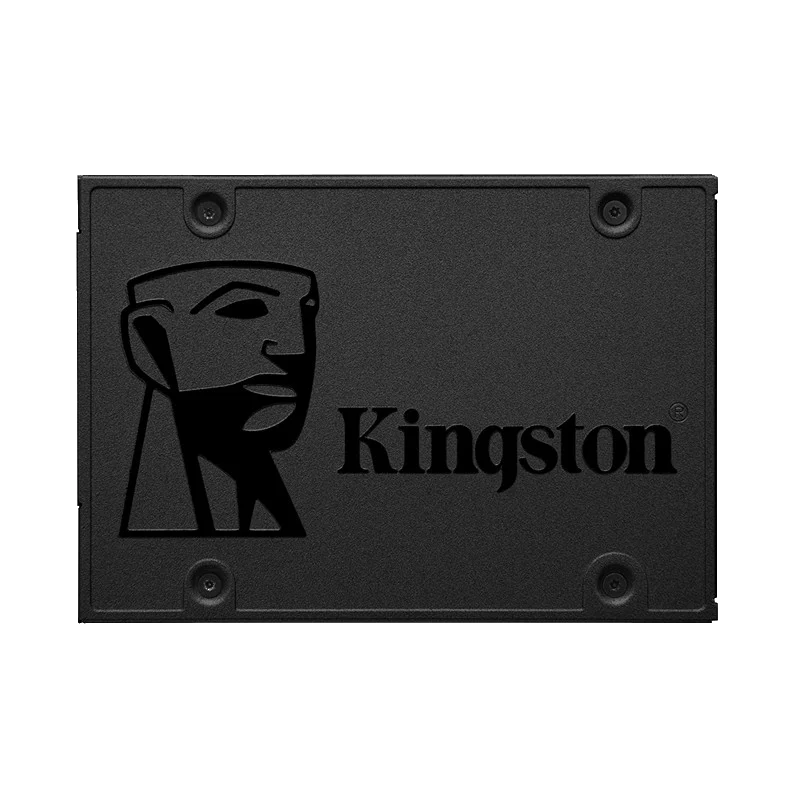

Discs Durs

Kingston A400 SSD 240GB
Disc dur d'estat sòlid amb connexió SATA de 240 GB, fabricat per Kingston.
Pàgina oficialSeagate BarraCuda 35 1TB SATA3
Disc dur mecànic amb connexió SATA de 1 TB, fabricat per Seagate BarraCuda.
Pàgina oficialKingston A400 SSD 480GB
Disc dur d'estat sòlid amb connexió SATA de 480 GB, fabricat per Kingston.
Pàgina oficialKingston A400 SSD 120GB
Disc dur d'estat sòlid amb connexió SATA de 120 GB, fabricat per Kingston.
Pàgina oficial